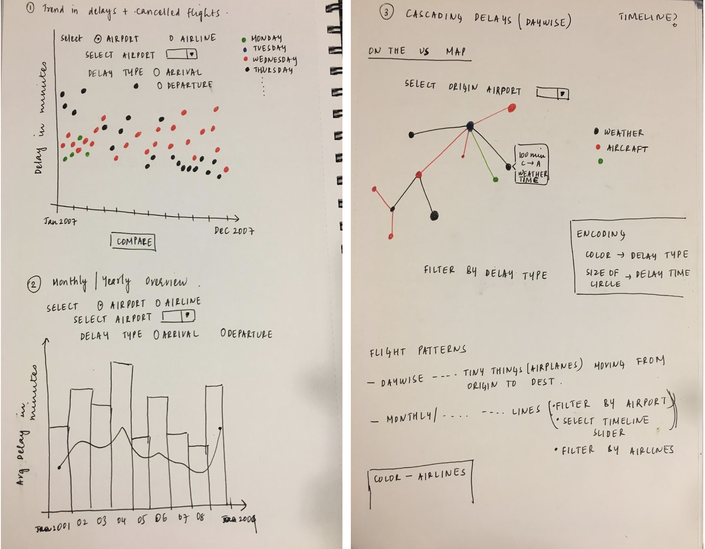
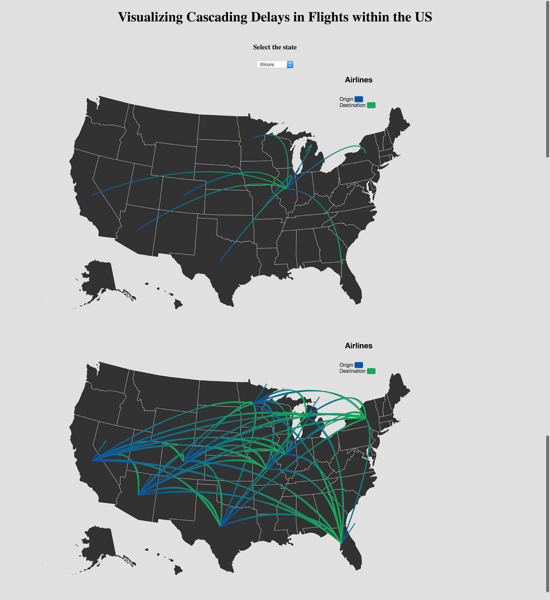
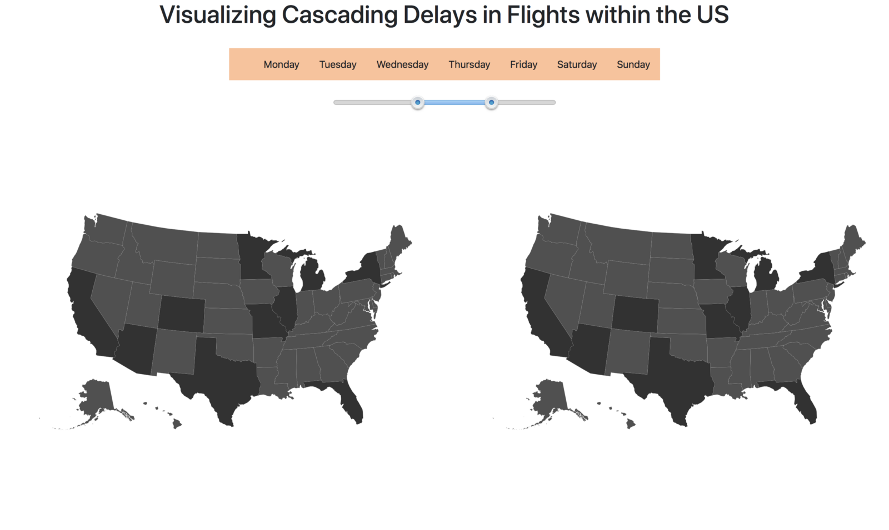
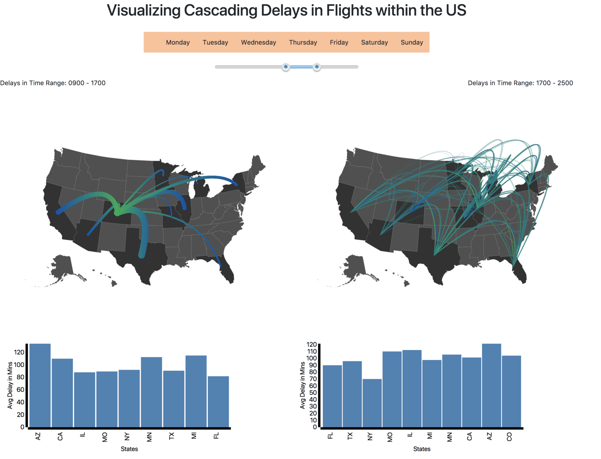

Visualizing Cascading Delays in Flights in the US
- Duration: Fall 2017 - Team Project
- Courses: Data Visualization
- Tools and Methods: DataMaps and D3.js
Visualizing Cascading Delays is a project in which a fellow classmate and I visualized the airplane dataset for the year 2007 to identify cities in which the cascading delays are maximum as well as cities in which the delays are minimum. Cascading Delays in other words is defined as the departure delay caused at the origin airport, thereby causing an arrival delay at a connecting airport which in turn causes an arrival delay at the destination airport. For example, a flight moving from NY to CA has connections at TX. If the flight is delayed by 60mins at NY, which causes a delay of 45mins at TX in turn causing a delay of 20mins when the flight arrives at CA is called as Cascading Delays.
Overview
Our team project is based on improving kid’s education in elementary schools through interactive learning systems. Our main motivation for choosing this project is that we observed that the kids were having great difficulty focusing on learning the materials provided in class as they were not engaged or motivated enough.
Project Goals
The airplane dataset is huge and has multiple data points which makes it challenging to visualize the important features of this data. The aim of this term project is to find effective ways of visualizing this dataset such that it could help passengers select days with least delays or could enable the airport authorities to see delay patterns and make necessary changes. Also, for someone interested in studying flights in the US, these visualizations could also help gain insights into how flying patterns of people in the US have altered over time.
The dataset contains details of all the flights within the US from 1987 to 2008. Two broad categories of data points that can be looked into are delay patterns and flying patterns.
Design Process
Discover
It is observed that cascading delays were highly frequent in the US, but there are no proper visualization methods through which the users can understand which flights to choose with minimum delay. Taking this as our problem statement, we brainstormed to identify the users and their pain points.
Target Audience or Users
The target audience for this data visualization project are data analysts, airport and airlines crew, and flyers(passengers).
User Goals
To view and select flights that cause minimum delays at the connecting airport due to delays in origin airport.
Questions this visualization answers
We focus on answering two major questions through this visualization project -
- Help users observe flying patterns as well as delay patterns in flights in the US
- Is there a pattern of delays at particular airports?
- Do delays cascade, that is do delays at one airport lead to delays at other airports?
Research
To research more on how to visualize the proposed questions using the airplane dataset, we performed an extensive literature review. Different kinds of research that has already been done on visualizing multidimensional and temporal data, visualizing airplane dataset and notions of storytelling for any data visualization project were all studied.
Design
Post our literature review, we sketched out different ways in which we can visualize flight patterns (trends in delays and flight patterns) and cascading delays.
Develop
We initially started developing this visualization project with a dummy dataset to show animation of flight patterns across the US in the year 2007. The Datamaps library was used to plot the US map and to display the flight patterns in the form of arcs. For instance, for a flight moving from MD (Maryland) to CA (California) , an animated arc is drawn starting from MD and ending at CA.
Post visualizing flight patterns in the US, we aimed to focus on visualizing cascading delays.Using a dataset for the year 2007, we visualized two levels of delays (first level being the origin airport for the initial set of delays and the second level being the delays caused in other airports due to delays in the origin airport). The origin airport is chosen by the user from a select set of ten major states. The difference between the origin and the destination points in these arcs are distinguished by using gradients. The darker shade corresponds to the origin while the lighter shade indicates the destination state. In the first level, we chose a timeframe of 5PM to 8PM to show the delays.

The states of flights which were delayed from the origin airports are all taken as origins for the second level and the delays they caused in the flights departing from them are visualized. An animation sequence was implemented wherein we first show the first level of delays and once that is done, we show the second level of delays(cascading delays) after that on a different map.In the second level, we chose a timeframe of 8PM to 11PM to show the cascading delays.
We observed that the gradient mappings did not occur consistently and there were significant bugs in the visualization which were found during user testing. We incorporated all these findings in our final implementation. To give our users freedom of choosing the time frame and to observe at which timeframe the delays were maximum, we implemented a time slider and a bar chart that shows the average delays caused in the cities. The user also has the freedom to select the day of the week in which they wish to view the delay information. Once the user chooses an origin airport by clicking on a particular state(one out of the 10 major states), the two levels of delays are visualized, along with a bar chart to show average delays at a particular timeframe.The weight of each arc in the first level of delays indicates the delay minutes.Through our visualization, we help users understand flight patterns being affected due to cascading delays and find out in which states the delays are being caused maximum.
 Key Takeaways
Through this visualization, we were able to identify the following -
- Cities in which the delays were maximum and minimum
- Average delay(in minutes)caused due to delay in origin airport.
- Average delay(in minutes)at other airports caused due to delay in origin airport.